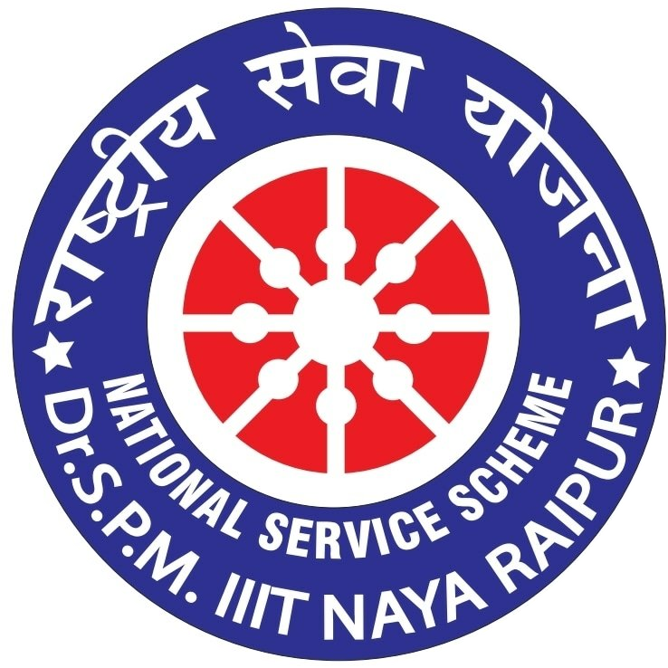

Skip to archives

NSS
IIIT Naya Raipur
About
Events
Calendar
Archives
Team
Join us
NSS / history
Every year remains part of the work.
Browse published events, galleries, reports, and rosters by academic year.